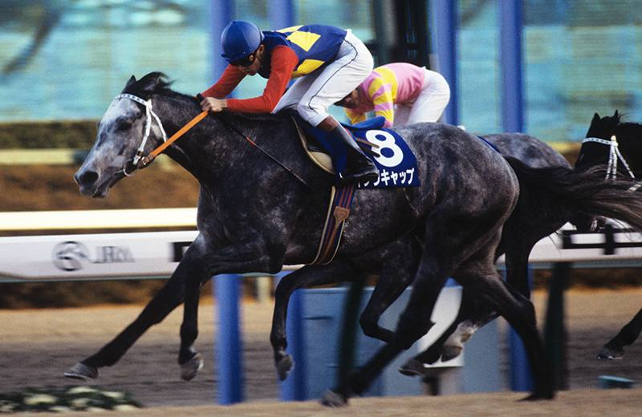
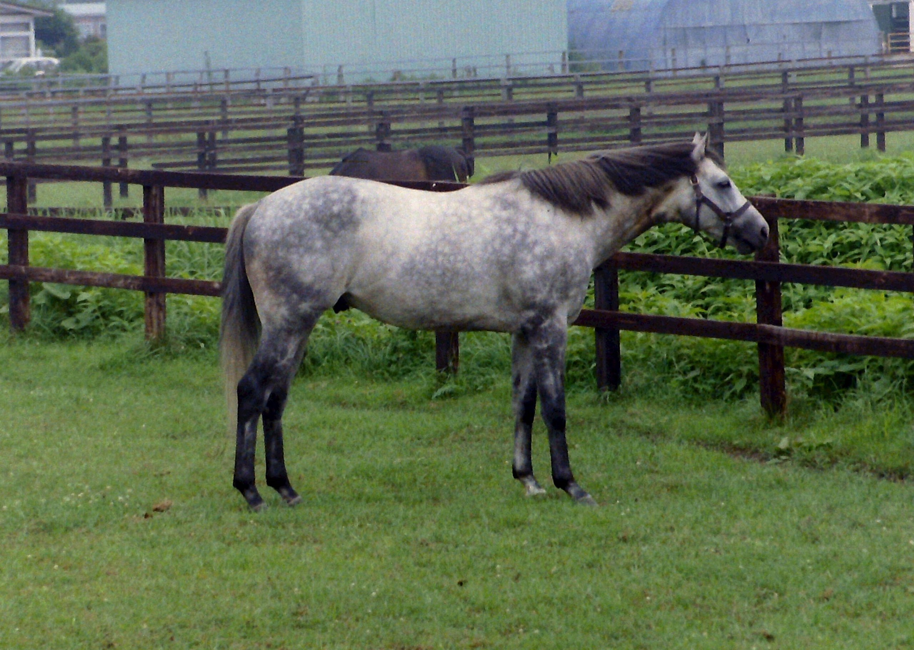
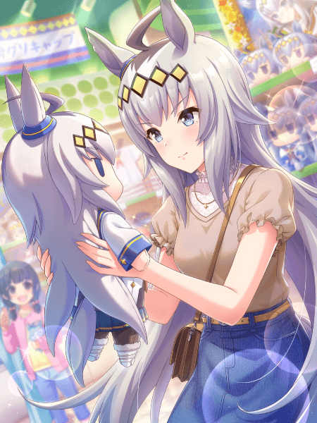
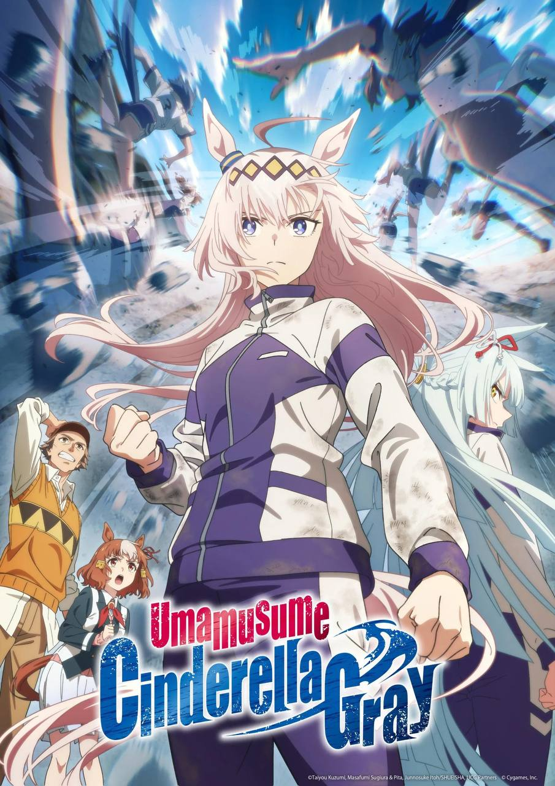
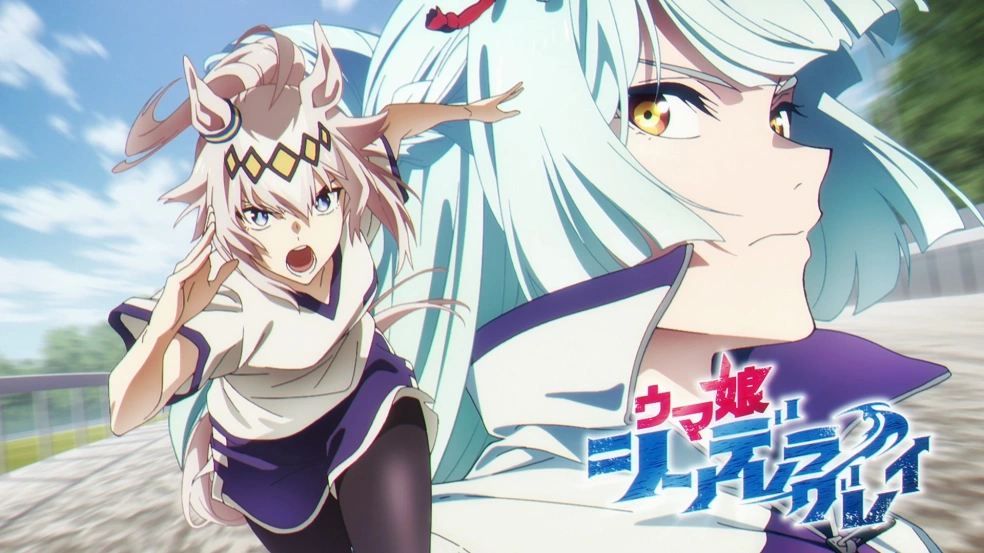
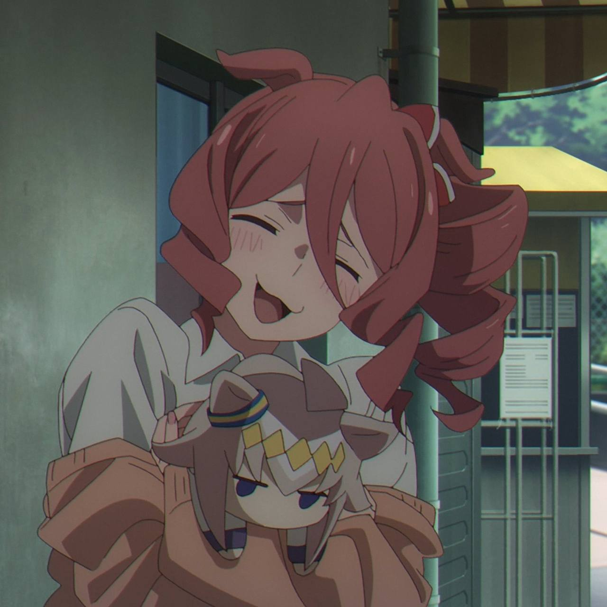
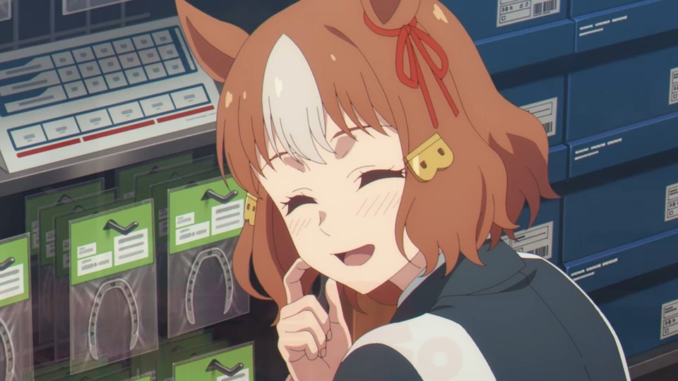
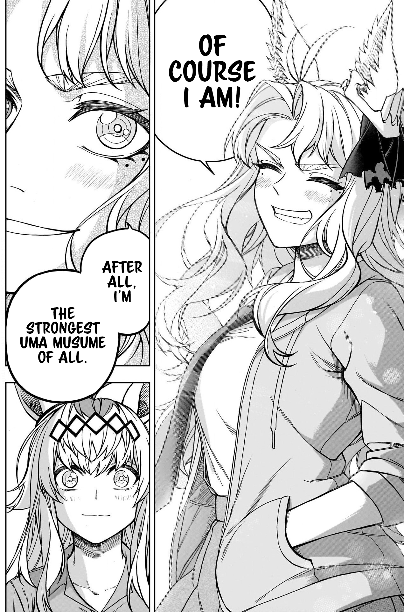
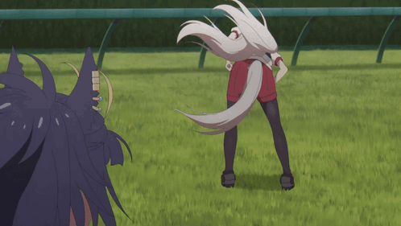
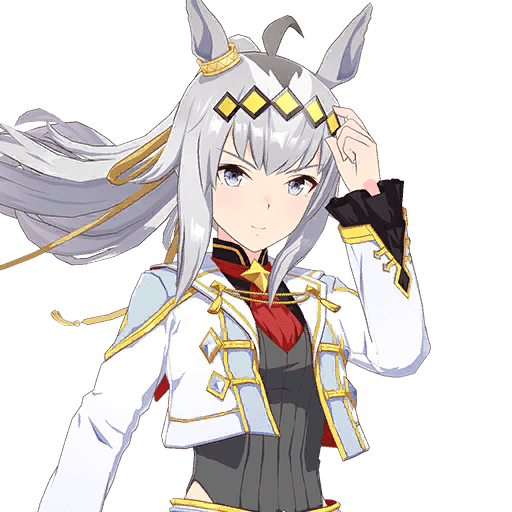

Огури Кап — девушка с длинными пепельно-серыми волосами и голубыми глазами.
В своём гоночном наряде она носит ободок с 5 желтыми
кристаллами и белую рубашку с темно-синими и золотыми элементами, напоминающую форму
моряков. Под рубашкой виден белый жилет и красная лента, поверх которой расположена желтая звезда.
Образ дополняют короткая синяя юбка, темные чулки и массивные сапоги на каблуках.
В Uma Musume у всех лошадей есть украшение (обычно бантик) на одном из ушей. Украшение на правом
ухе означает, что настоящая лошадь была жеребцом, на левом ухе — кобылой. Огури Кап носит
голубую повязку на правом ухе, т.к Огури Кап в реальной жизни — жеребец.
Цвета её гоночного наряда напоминают цвета жокейского шелка настоящей лошади, а её ободок - узоры
на костюме жокея Огури Кап.
Её пепельно-серые волосы в игре напоминают окрас настоящего Огури Кап.

Настоящий Огури Кап
Об Огури Кап

Огури Кап на ферме
Огури Кап (27 марта 1985 – 3 июля 2010) - японский чистокровный скаковой конь, жеребец,
сын Дэнсинг Кап. Огури Кап был включен в Зал славы Японской ассоциации скачек в 1991 году.
Лошадь из сельской местности, добившаяся успеха на национальном уровне, он был известен как
член "Большой тройки Хэйсэй", наряду с Супер Крик и Инари Ван, трио скаковых лошадей, которые возродили интерес к скачкам в
Японии.
Имя на японском: オグリキャップ
Происхождение имени: от фамилии его первого владельца - Огури (Oguri) и имени его отца -
Дэнсинг Кап (Dancing Cap).
История гонок: [22-6-1-3], в том числе: Арима Кинен (GI) 1988 и 1990 годов,
Чемпионат на милю (GI) 1989 года и Ясуда Кинен 1990.
Интересные факты

Имя настоящей лошади изначально было “Хацурацу”, что означает "живой". В 1987 году он
был переименован в Огури Кап.
Хацурацу - это также имя, которое Огури Кап дает бездомной кошке в своем тренировочном сценарии в
игре.
Обжорство Огури Кап вдохновлено тем, какой лошадь была в реальной жизни.
Команда настоящей лошади заявляла, что он только и делал, что ел и спал после скачек.
Название ее собственной песни в игре "unbreakable" - это имя прапрадеда настоящего Огури Кап.
Вероятно, Огури Кап был одной из самых любимых лошадей в истории, и он был центральной
фигурой второго бума японских скачек (первый бум был вызван Хайсейко). В то время, даже если
бы кто-то не интересовался скачками, он бы знал, кто такой Огури Кап. Неудивительно, что именно
Огури Кап была выбрана как главная героиня аниме и манги "Девушки-пони: Серая Золушка"
("Uma Musume: Cinderella Gray").

Постер к аниме "Девушки-пони: Серая Золушка"
Огури Кап и Тамамо Кросс разрушили стереотип о том, что серые лошади не способны побеждать,
который был широко распространен в то время в Японии. Этот факт упоминает Симболи Рудольф в
аниме "Девушки-пони: Серая Золушка".
Настоящий Огури Кап - ужасный пловец. Свидетели говорили, что он “плавает так медленно,
что выглядит будто он вот-вот утонет”.
В главе 81 манги "Девушки-пони: Серая Золушка" Огури Кап чуть не утонула.
Пока настоящий Огури Кап участвовал в гонках в Касамацу, его главным соперником была лошадь
Марч Тосё (March Tosho). На ней основан персонаж в "Серой Золушке" с похожим именем,
Фуджимаса Марч (Fijimasa March), которая также является соперницей Огури Кап в Касамацу.
Фуджимаса Марч в аниме так же, как и в реальной жизни Марч Тосё, стала причиной, почему Огури Кап пришла
второй в своей дебютной гонке.

Огури Кап и Фуджимаса Марч
Огури Кап стал первой японской лошадью, у которой появились официальные плюшевые игрушки.
JRA стала выпускать их, чтобы удовлетворить спрос со стороны огромного количества
новых поклонниц лошади.
Таких фанаток называли “Девочки Огури”. В "Серой золушке" персонаж Норн Эйс становится
одной из них.

Норн Эйс
Люди, заботившиеся о настоящем Огури Кап, включая кузнеца его подков Масару Минова и его конюха Томомицу Кавасэ были воплощены в
"Серой Золушке" в виде персонажа Бельно Лайт (Belno Light).

Бельно Лайт
Настоящий Огури Кап был влюблен (или, по крайней мере, его привлекала) в новозеландскую
кобылу по кличке Хорликс (Horlicks). Хорликс приехала в Японию в 1989 году, чтобы принять
участие в Кубке Японии, который она тогда и выиграла.
Хорликс, вероятно, перенесена в мангу "Девушки-пони: Серая Золушка" в виде персонажа
Фолк Квин (Folk Queen).

Фолк Квин
В 7 эпизоде "Серой Золушки" Огури Кап быстро мотает головой, что настоящая лошадь
действительно любила делать перед гонками.

Настоящий Огури Кап бежал, опустив голову так, что всё его тело было почти параллельно земле,
что придавало ему дополнительную силу тяги и уменьшало аэродинамическое сопротивление.
Его копыта также глубоко зарывались в землю при беге. Его стиль бега особенно подчеркнут в
"Серой Золушке", но, к сожалению, не в игре.
Настоящий Огури Кап очень серьезно относился к гонкам, поэтому он не знал, когда нужно
расслабиться. Его жокею приходилось помогать ему в этом.
В "Серой Золушке" Огури Кап постоянно тренируется. Даже во время летних каникул она
хочет бегать.
Несмотря на то, что многие фанаты считают Арима Кинен 1990 года лучшей гонкой в
истории кейба, она хороша только своей драматичностью (это была гонка "возрождения" Огури Кап).
Сама гонка прошла довольно спокойно и в пользу Огури Кап.
Причина тому была довольно проста: Огури Кап на тот момент был в своей лучшей форме, а его
стиль бега с медленным темпом и резким ускорением ближе к концу был невыгоден его
соперникам в той гонке.
Это событие даже довольно правдоподобно отражено в "Серой Золушке". Огури Кап просто...
выигрывает эту гонку.
В своем альтернативном костюме в игре "Аниме коллаб" ("Anime Collab") ее уникальный навык
становится еще сильнее на Арима Кинен, если она наберет более 146 738 фанатов к этой гонке.
Это количество голосов, которое получила настоящая лошадь в голосовании на Арима Кинен в 1990
году.

Огури Кап "Аниме Коллаб"
Первый секрет в профиле Огури Кап в игре гласит: "У нее великолепно получается
правильно стричь ногти."
Перед тем как начать участвовать в региональных гонках после Касамацу, настоящему Огури Кап подпилили и
подправили копыта. Ему также это очень понравилось.
Второй секрет в профиле Огури Кап в игре гласит: "Ее мечта на ближайшее будущее - стать дотеяки."
Дотеяки - это блюдо местной кухни в Осаке, популярное в регионе Кансай. Касамацу (откуда родом Огури Кап)
славится своими дотеяки.
Дотеяки был использован в названии одной из гонок Касамацу
29 апреля 2025 года (гонка 4R, класс C, организованная в честь выхода второго сезона аниме
"Девушки-пони: Серая Золушка"). Название гонки - “Дотеяки, о котором мечтал даже Огури Кап”
(“The doteyaki longed even by Oguri Cap memorial”).